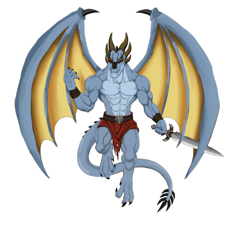
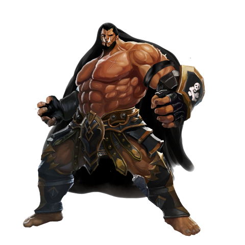
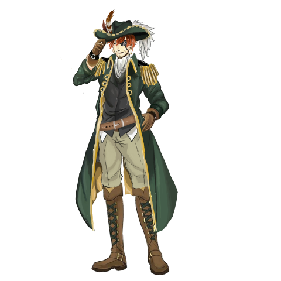
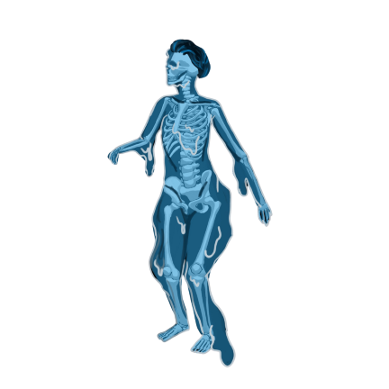

Juega con lore
Ser un dios no es como te dicen que es,es aburrido cuando no tenes creyentes o no puedes ver el destino de los demás.Esto les pasaba a nuestros 8 dioses,creadores del universo,estaban siempre aburridos.Cuando empezaron a existir con los demás planetas todo parecía estar bien,la diversión no acababa y se podía sentir un grupo muy unido.Sin embargo,ver a las mismas personas por alrededor de miles de años llega a ser estresante y cansado,las peleas comenzaron y los dioses decidieron colonizar planetas para poder utilizar a los seres vivos de allí para su antojo.Grande fue su sorpresa cuando vieron que no existían seres que cumplieran sus altas expectativas,las peleas y el sentimiento de discordia fue en aumento al mismo tiempo que investigaban el vasto universo que ellos podían cambiar.. Algunas veces,al tener tanto tiempo un objetivo,este se vuelve realidad,¿No? y así pasó. Los dioses hartos de ver como no tenían muñecos decidieron crear los suyos.Al principio salían mal:Su cuerpo no estaba completo,no podían controlarlos con facilidad,pero con la frustración que sentían llegaba la motivación para calmar la herida.Y así fue como se les ocurrió hacerlos a su semejanza porque ellos eran perfectos,por algo eran dioses. Los seres vivos eran perfectos,podían ser manipulados fácilmente y podían hacer más variables a partir de su imagen,simplemente increíble.Obviamente estos muñecos necesitaban un lugar para vivir y desarrollarse así que con la llegada de ellos,se creó el mundo (TENEMOS NOMBRE DE JUEGO PERO NO DE MUNDO). Las divinidades desplegaron a los seres para que puedan conocer su hogar. Dejarían que sus muñecas puedan evolucionar mientras ellos ven todo hasta saber cuando sería más divertido unirse a ellos.
En este juego existen 6 reinos en los cuales cada uno tiene 8 paises.
1. Reino: Tierra de nadie -Hav
-Vask
-Insekt
-På
-død
-Endring
-Kriger
-edderkopp

2. Reino: Tierra de todos
-Svak
-Irritere
-Dru-wid
-No hay información.
-Kald
-Lur
-Udødelig
-Die Freilassung

3. Reino: Klaurien -Imperial -Bretón -Nordico -Viridis -Ceruleum -Ruber -Igris -Los Marston 
4. Reino: Kisiwazo -Uvuvi -Kabimaki -Kiu -Tsu -Mai -Magofu -Theluji -Wishubila 
5. Reino: Kuibama -Piratas Garras de león -Piratas Palos de espada -Piratas ojo sombrío -Piratas Cartas mensajeras -Piratas Calaveras andantes -Piratas Colmillos invisibles -Piratas Minotauro -Piratas Sombreros de copa 
6. Reino: JIRKA - Moai - Okkotsu - Zenin - Morgan - Lenny - Imperio Nakano - Jura Tempest - Junta Militar de Artotzka 